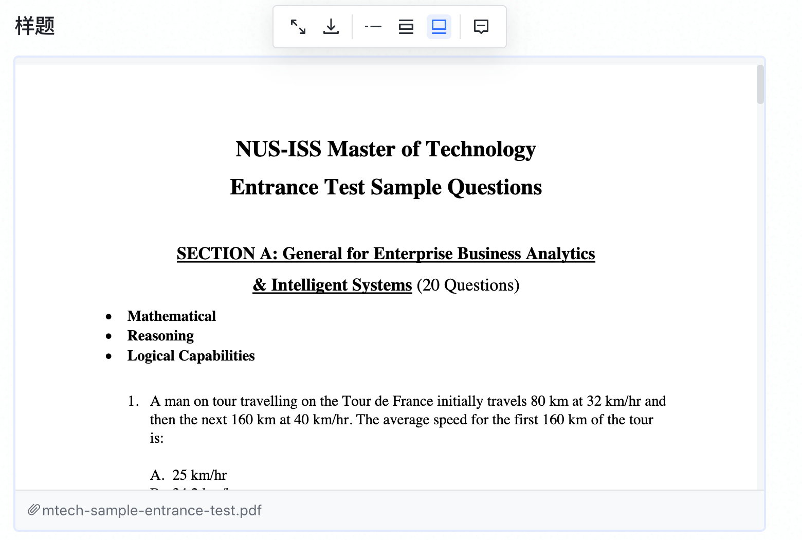
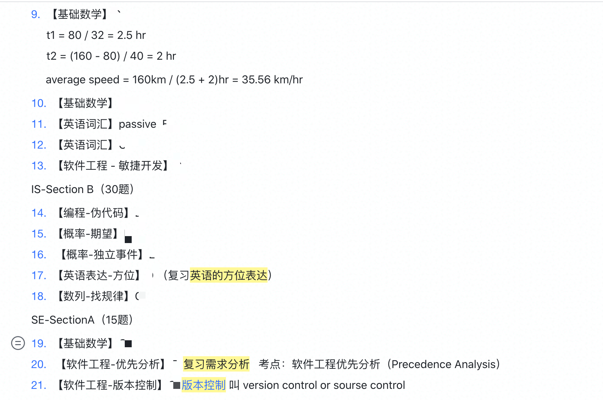
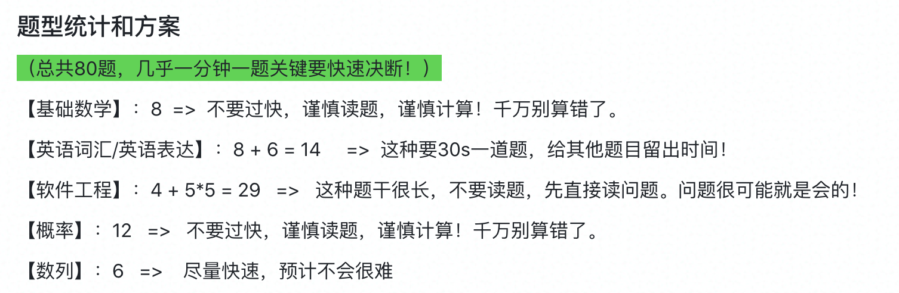
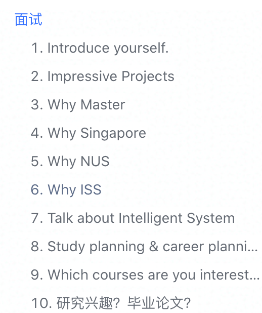

【留学申请】NUS MTech in Intelligent System 从选校到收offer的攻略分享
2021fall申请季已经逐渐到尾声，经过了半年的全职准备，我终于收获了第一志愿新加坡国立大学的offer。收到offer的那天，感觉自己半年来的努力和惶恐都有了回报，一切都值得了。新加坡国立大学的计算机系（SOC）大家都知道很好，但同时入学要求也特别高，需要考G。我申请的是一个更匹配我条件的项目——Intelligent System。这个项目可能很多人没听过，但这其实是个入手不亏的宝藏项目，它更工作导向，重视实践经验，适合有工作经验不打算读博的同学申请。
想给大家分享一下我的申请经历是因为，我在半年里从往年的同学分享中获取了很多信心和力量。如今我申请成功了，也希望能为以后的同学提供一点点帮助。下面我从确定目标到收offer，给大家分享一下每个环节的攻略。时间线标注在小标题后.
确定留学目标（2020.07 - 2020.08）
我是在20年7月的时候诞生了留学的想法，当时我刚好本科毕业三年整，到了需要往下进行职业规划的时间节点。回顾我的三年职业生涯，我觉得按照我目前的线路，无法在未来30年为我带来稳定的收入和乐趣。于是，留学的想法就诞生了。我立刻着手辞职交接，八月中正式离职备考雅思。
但无论是本科应届毕业生，还是工作后重新出发的申请人，我都建议大家一定要先想好自己留学的目标是什么。为了获取学历？为了一份留学体验？为了海归的光环？还是为了获取应届生身份？我们的目标决定着我们要如何进行选校，千万不要还没想清楚就胡乱开始。
中介 OR DIY？如何选校？（2020.10）
在整个申请季的开始，申请学生面临的第一个问题就是中介 OR DIY？我在网上经常看到这个问题。我理解提出这个问题主要是对未知的恐惧，申请人都担心自己没有全局的视野，如果错过了申请时机，做错了什么，就会与成功失之交臂。但我个人建议大家毋需害怕，中介通常也没有全局视野。何况轻度焦虑是必然会发生的，如何调整好心态，给自己信心，是整个留学过程中我们都要面对的挑战。
我是从七月开始找申请过的同学开始了解他们的项目，并在网上海量搜索信息。最终找到了一个同学录取了NUS IS，正准备上网课。虽然我们不太熟悉，但我还是厚着脸皮问了很多问题。通过更多的了解，我确定了我的第一志愿就是这个项目。学术氛围、就业环境和申请体验，这些信息大部分是一般中介无法告诉我们的，但它们其实更重要。比如我同学告诉我，NUS ISS的小米非常友好，如果有缺少信息的情况会邮件通知申请人，所以在网申过程中并不需要太焦虑，容错率非常高，不存在你填错了就out的情况。
留学中介在互联网信息不够丰富的时候，通过信息渠道赚取信息差费用，但如今这个优势已经不复存在了。只要动动手指，善用搜索引擎，我们每个人都可以获得准确的信息，筛选出心仪的学校和项目。这里我推荐几个前期搜索信息筛选学校的渠道：
- 往届同学。因为同学常常有相似的学术背景和专业能力，通过对比往届同学，我们能快速定位到自己在茫茫留学申请人中的位置。并且可以通过访问往届同学，了解到项目的就读体验等主观信息。
- 寄托网站。寄托网站上有广大的offer榜分享，大家可以通过对比自己相似的bg去找准女神校和保底校。
- QS等权威排名。这里不讨论QS排名的合理性和权威性，但以QS、THE、TIME为代表的一系列排名能够粗略地反映出学校的整体水平。第三十和第四十名不一定谁更适合你，但第五十和第一百五十的区别度就很明显了。
- 知乎等分享网站。以知乎为例，网上有大量的留学分享数据。虽然大部分都是中介广告，但通过海量中介分享的数据也能快速地为自己找准定位。
雅思刷到多少满意？要考G吗？（2020.09）
如果直接问中介，中介肯定都是告诉你雅思越高越好呀，G当然要考这是个加分项。这个回答放在所有留学生人群中肯定是一个普适的答案，但不一定就是适合你的答案。事实上，当你确定好你的选校和项目范围后，所有的信息都在官网上摆着。你很快就会发现每个项目都不同，有些需要7.0雅思，还要求小分6.0，有些只要6.0还没有小分要求。如果一个中介直接告诉你国立大学雅思要求6.5以上而你只有6.0只能放弃，不就被坑了吗？事实上，不少专业只要求6.0。
如果你有其他亮点，英语成绩不是你的强项，和我一样，那我的建议是也不用一直逼自己刷高分，够到你心仪的学校录取要求就行。我自己是第一次考了6.5(6.0)就没考了，刚好够到南洋理工AI program的门槛，也根本没考G。因为我知道我英语没多好，多努力也就最多刷到7。GRE和GMAT更是本科知识都忘差不多了，备考起来花时间花精力，还很难短时间内取得好成绩。而我的核心竞争力是我的三年工程经验，花多点时间写好简历项目介绍才是正事。
留学季时间紧张的情况下，多考虑投入产出比，多考虑自己的优势，尽量从招生办的角度审视自己的背景。这可能对没有工作经验的同学有点困难，但有招聘经验的同学应该能理解我的意思。
文书准备（2020.10 - 2020.11）
上面说到要从招生办的角度审视自己的背景，这是帮助同学们决策自己的发力点是哪里，那如果找不到自己特别的亮点应该怎么发力？从网上的分享来看，可以从文书下手发力。
我自己的亮点不在文书，但我的项目经历需要通过良好的表达，才能给招生办留下好印象，所以我仍然在文书上下了大功夫。我是在知乎上找了几个文书中介，最终对比筛选出了WordSunny。这个文书机构案例比较多并且机构定位与我的需求很契合。在中介帮我们找文书老师的时候，想清楚自己的需求并表达清楚也很重要。通过沟通，我最终找了一个确保有时间跟我交流，同时有计算机背景交流起来不费力的NUS毕业校友来帮助我完成文书（张骄老师）。
这里夸奖一下张骄老师，我们沟通起来还是非常顺利的。前期我们通过文档沟通，后期周末约时间zoom，整体节奏非常舒服。能感觉到老师在认真地完成这个工作，并且包含了他的经验指导，而不是流水线生产。
最开始，WordSunny这边有标准化的表格来帮助我们梳理自己的思路和信息，这个表格一定要尽可能地详细，千万不能敷衍。我们作为申请人自己都敷衍，老师就更会无从下手。当文书（CV、PS）第一版出来后，我们必须仔细地阅读。一般来说不可能根据文案写的就很完美，毕竟文字沟通始终有gap。这个时候可以跟老师一起约个时间，视频一下，根据第一版从头到尾梳理一遍修改点，并描述清楚问题在哪，为什么想这么改。申请人知道自己想表达的内容和塑造的形象，老师知道如何表达更恰当，只有通过多沟通，才能一起完成一份满意的文书。
最终我就用这一份文书，修改替换一些关键词，投遍了申请季的所有项目。费用贵是真的贵，但最终感觉还是值得吧。我在网上看到有一些同学也用了WordSunny的服务，但并没有很理想的结果。我还是强调一下我给同学们的建议，没有足够的沟通，文书老师只能凭想象构筑空中楼阁，结果一定会与你想象的不同。只有有效率有用的沟通，才能得到理想的结果，这里没有捷径可以走。
递交申请（2020.11 - 2020.12）
递交申请完全是个体力活，我从第一个项目最开始官网点进去找不到项目，到最后20分钟申请完一个项目，进化神速。其实真正需要花时间去熟悉的只有第一个项目，后面有经验了都是大同小异。所以我推荐大家在第二个申请自己的dream school，这样避免了完全没经验，也不至于到后面都麻木随意投。
最开始申请，推荐看知乎的“假洋鬼子Kenny”这个答主。常见的好学校都有手把手教学，配图，每一步都很详细，适合完全没经验的同学对照申请。不过这个答主应该也是中介，中介服务我是没用过的，完全不了解。非要说利益相关，那就是我给用过的每个回答都点了赞～
非要说递交申请有什么经验和策略，我觉得将保底校延后申请是一个挺好的小技巧。众所周知，香港学校滚动录取，所以越早提交越容易被录取。但正是由于滚动录取，如果你很有把握的保底校也很早就提交申请，那你的保底offer也会来得早。而女神校你还在茫茫人海中滚动，要不要交留位费稳住保底学校，就成了一个很尴尬的问题。我自己是全部项目十二月投递，一月初就收到了港理工DSA的offer，8w的留位费令人头秃，挣扎了两个星期拖到最后一天我还是交了。而女神校直到三月才给我发offer，目前为止其他学校还没动静，没有offer也没有拒信。如果港理工拖到一月再提交申请，可能我就省了8w。
笔试和面试（2021.01 - 2021.03，一月底笔试，二月初面试）
Intelligent System这个项目在一众GRE要求中鹤立鸡群，与众不同，它要自己出题考试。于是，如何准备笔试也是一个令人头疼的问题。官方给了样题，样题就只有一套，年年都一样，网上也完全没有题库。那就只能从样题入手分析了。我做了一遍样题，并将每道题的考察点列出来查漏补缺。

列出知识点后，就是统计题型和制定做题策略。


最终笔试的时候要比我想象的顺利很多，除了英文单词题太难一个都不会以外（没办法英语差，而且也来不及复习了。甚至后悔没有直接全选C，还排除法做了很久），其他的题目都比较简单，只要保持一分钟一题的速度，完成考试没有太多的难度。尤其我是IS和SE考试一起考，SE试题过于简单，题量也少，只要真正做过项目的同学都能很顺利答出来的那种。我甚至提前交卷了…
真正有难度的是面试。纯英语面试对我来说是第一次，我相信对很多申请的同学来说也是。我刚开始也非常焦虑，但是害怕也没用，我通过分析认为，这场面试考察的主要还是技术能力。这个项目需要一定的编程基础和机器学习基础，面试官需要知道你是不是有这些基础，或者说你是不是有自学补齐这些基础的能力。英语水平我认为只是顺便，不影响沟通即可。通过收集资料，我自己写或者收集，共压了24道面试题，面试时也非常幸运地全部都在射程内！

为了更好地展现我的项目优势，也为了给我的面试增加亮点，我简单地准备了一个keynote来介绍我最出色的两个项目经历。这也是有一些讨巧，在沟通的过程中，用中文描述项目经历就已经很难了，何况是英语。所以使用PPT图表的方式，既不会过多暴露我的英语词汇量匮乏（只是不要进一步放大劣势），又能更准确地传达项目有多牛！最重要的是，老师会认可我为面试做的准备，能够知道这就是我的Dream School！
等待offer（2021.12 - 2021.03，三月初offer）
讲道理等待offer是整个申请过程中最最最煎熬的时刻了。受到疫情影响，2021年的申请人数特别多，小米（香港的几乎不回复了）也不像往年一样积极回复邮件了。这个时候如何关注周围已录取同学的背景和情况就是我们最关心的问题。我最推荐两个渠道，一个是寄托天下，另一个是知乎留学中介的定期发布（推荐答主：“April学姐”）。再次再次，没用过这些中介啊，不是在推荐这些中介服务。
由于焦虑，我们肯定是各种加群，各种认识申请的同学，然后互相打气，回想起来这段经历也还蛮好玩儿的。现在我的微信列表里还有很多等offer的小伙伴，希望他们也顺顺利利，拿下Dream School！
本博客所有文章除特别声明外，均采用 CC BY-SA 4.0 协议 ，转载请注明出处！